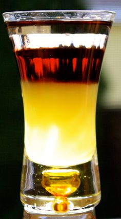

Mindset & Wellness
Double Layered Go-Go Juice

I'm waiting for my phone to charge so I can go to the gym. First world problem right? That's what I get for not plugging it in last night. I'm planning on doing a chest workout, and I'm trying to have the best workout possible so I have somewhat of a process I go through before I go to the gym. I've already eaten my apple and my two eggs. This is the rest of my process:
First, I turn on music or a video of a workout showing exercises for the muscle group I'm working that day. This is a good way for me to get into the right mindset before I go to the gym. For example, I'm watching a Calum Von Moger chest workout right now because I'm doing a chest workout today. I think I'm going to increase the volume of my workout today too because it's something I haven't done in a while. I'm actually getting excited just thinking about it. More weight = more muscle = more strength = more better days.
It's funny, I show up to the gym and people say to me, "Ryan, you're like one of the happiest guys I know." And I'm blown away by this! It bothers me to think that the majority of the people I come into contact with in a day just aren't happy on a genuine level. I'm hesitant to ask how someone's day is going some days because I don't know if they're telling the truth half the time. Then, come to find out the people saying these things, the people working at the gym, don't even workout! No wonder they're so unhappy.
Working out and exercising is like oxygen to your lungs, it's necessary, and training to live a healthier lifestyle is not a hard process. It's worth it to jump off of the couch to get your heart rate elevated a little bit each day. I can live without abs, but without a heart I do not exist. It's the most important muscle I exercise each day, and I love this process to the core because I know I will be working out for the rest of my life. It keeps me healthy, and it keeps me sane.
The funny part about the second step to my process is that it already started before paragraph number two. I had a bright idea earlier so it just happened to flow into real life before I began my pre-lift Youtube session with Calum. The second step to my process is usually mixing/drinking my pre-workout (GoGo Juice) while I watch/listen to Youtube, but today I knew I had some orange/peach/mango juice left in the fridge. I like to mix my pre-workout with coffee sometimes too, but instead I decided to mix all three together today. Yes, coffee, orange/peach/mango juice, and black cherry flavored pre-workout powder. I let it sit for about 15 minutes before I drank it, and it turned into two layers: the coffee rose to the top, and the orange/peach/mango juice sunk to the bottom of the shaker cup. You could see the black cherry mixed between the whole concoction. I shook it all up for a second time, and I'm taking the last swig.... now.
The last part to my process is my favorite. I love playing the guitar with a full stomach and a bunch of pre-workout energy. The pre-workout recommends beginning exercise 30-45 minutes after ingestion, so I usually play for 10-20 minutes and proceed to switch outfits and head to the iron playground. I let the creative juices flow as I play my classical instrument. It's like a warmup for the nerves connected to my muscles, as if my mind-body connection is getting stronger and stronger by the end of my jam session. Then, by the time I'm done playing I will be ready for the gym, and I will itch my forehead. Beta-Alanine is an Amino Acid in a lot of pre-workout drinks that helps reduce fatigue at the gym. It also makes my forehead itch REALLY BAD! So, yeah, I will be back, gonna go do this real quick....
....
*Jamming*
....
*Itching*
(15 minutes later)
I'M BACK!
I think it's important to make some sort of process of your own before you take on any major part of your day. It's the most efficient way to do whatever it is you do, for yourself. Having your own processes also makes it easier to remember what to do next, not leaving you asking yourself the famous question: "What should I do with my life?" If you do anything enough times it will eventually become a habit. My favorite is after I'm done reading my book in the morning around 6:45am. I say a few prayers, I think about all of the things I have in my life to be grateful for, and I watch the sunrise by 7 o'clock. You can't say it doesn't at least sound enjoyable, right? Wow, this GoGo juice sure does have some extra kick in it today.
Phone's charged, I'm about to pump shit up.